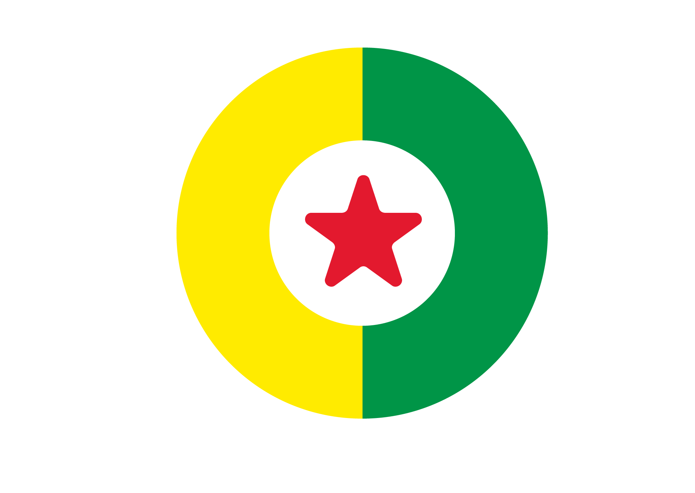

01 · Hook
0–1,5s

FAÇA PARTE
Seu apoio vira card em segundos.
Veja como criar o seu pelo celular.
 KIT OFICIAL · marca negativa completa
KIT OFICIAL · marca negativa completa
Movimento: título entra em dois beats; a estrela oficial deriva 8px para dentro com fade, sem pulsar. Sem zoom de site ainda.
CALIBRAÇÃO · BREXTER BOLD OFICIAL @ 360PX
Título: 34,2px (9,5cqw) · entrelinha 30,78px (0,9) · tracking −1,71px (−0,05em) · largura máxima 316,8px (100% do bloco entre insets de 6%). As três linhas são explícitas e não quebram internamente.